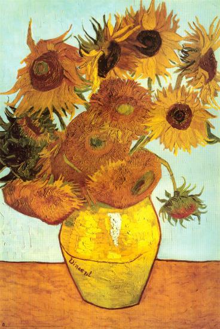

Works of Vincent Van Gogh
The Starry Night
Vincent van Gogp painted Starry Night in 1889 during his stay at the asylum of Saint-Paul-de-Mausole near Saint-Remy-de-Provence. Van Gogh lived well in the hospital; he was allowed more freedoms than any of the other patients. If attened, he could leave the hospital grounds; he was allowed to paint, read, and withdraw into his own room.

Sunflowers
Van Gogh's paintings of Sunflowers are among his most famous. He did them in Arles, in the south of France, in 1888 adn 1889. Vincent painted a total of fiev large canvases with sunflowers in a vase, with three shades of yellow 'and nothing else'. In this way, he demonstrared that it was possible to create an image with numerous variations of a single color, without any loss of eloquence.
